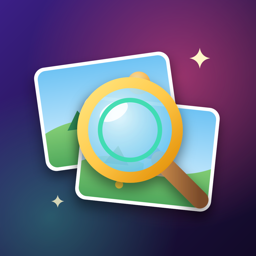
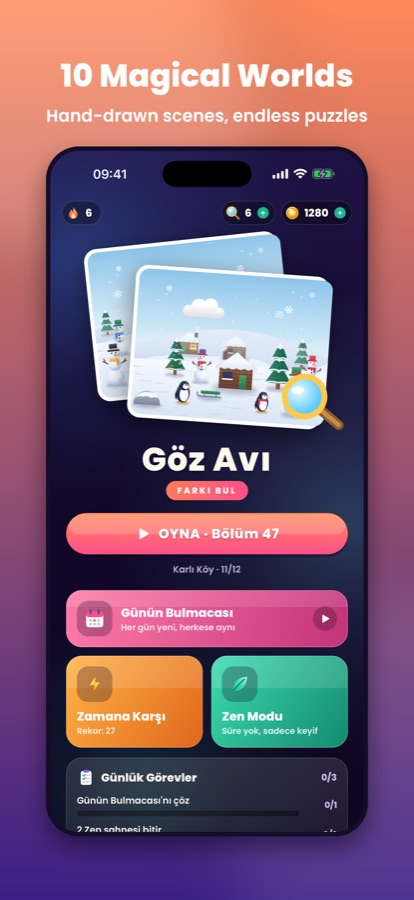
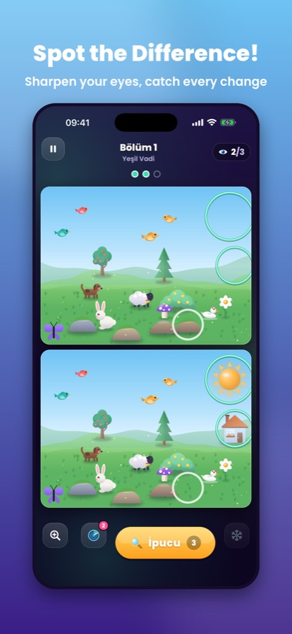
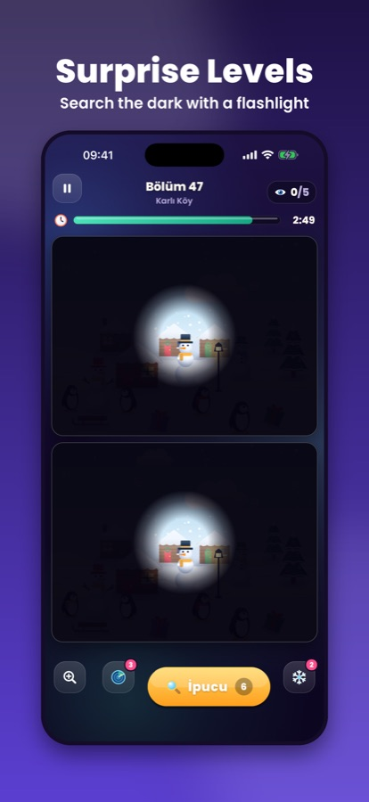

Keen Eye · Göz Avı
Spot the Difference — calming, fair and endlessly fresh



What's inside
10 enchanting worldsHand-drawn scenes; every difference is generated and pixel-checked, so none is ever invisible or unfair.
Difficulty that fits youEases off when you struggle, brings fresh challenges as you improve.
ArcadeHidden Objects, Memory and Odd One Out mini-games.
Every day something newDaily Puzzle, 7-day gift calendar, Season Pass, weekly Collection Hunt, league and quests.
Rebuild your townSpend your stars to restore five cosy areas with a friendly owl.
For everyoneColour-blind mode, 7 languages, iCloud backup, plays offline.
Support & FAQ
I reinstalled the game / got a new phone. Where is my progress?
On iPhone and iPad, progress is backed up to your iCloud account automatically when you are signed in to iCloud — just open the game with the same Apple ID. On Android, the system's automatic backup restores it when you set up the new device.How do I restore my purchases?
Open the Shop (tap the coin counter on the home screen) and tap Restore Purchases at the bottom. Remove Ads and the Starter Pack come back on any device signed in with the same store account.How do I cancel the VIP Club subscription?
iPhone: Settings → your name → Subscriptions → Keen Eye → Cancel. Android: Google Play → profile → Payments & subscriptions → Subscriptions. The subscription renews automatically unless cancelled at least 24 hours before the end of the current period; you keep VIP until then.I can't find the last difference!
Use a hint (magnifier) or the radar, pinch to zoom, or come back later — the game eases difficulty automatically if a level feels too hard.Can I play without ads?
Ads only appear between levels, never during play. Remove Ads (one-time) or the VIP Club turn interstitial ads off.Still need help? Write to gokhankaya1@yahoo.com — we usually reply within 2 business days. Please mention your device and the level number.
Türkçe · Destek
Göz Avı, 10 büyülü dünyada binlerce el çizimi sahneyle rahatlatıcı bir "farkı bul" oyunu. Oyun Salonu mini oyunları, Sezon Bileti, haftalık etkinlik, kendi kasabanı kurma ve 7 dil desteğiyle.
Oyunu yeniden yükledim / telefon değiştirdim, ilerlemem nerede?
iPhone ve iPad'de iCloud'a giriş yaptıysan ilerlemen otomatik yedeklenir; aynı Apple kimliğiyle oyunu açman yeterli. Android'de sistemin otomatik yedeklemesi yeni cihazı kurarken geri yükler.Satın alımlarımı nasıl geri yüklerim?
Mağaza'yı aç (ana sayfada altın sayacına dokun) ve en alttaki Satın Alımları Geri Yükle'ye dokun.VIP Kulübü aboneliğini nasıl iptal ederim?
iPhone: Ayarlar → adın → Abonelikler → Keen Eye → İptal. Android: Google Play → profil → Ödemeler ve abonelikler → Abonelikler. Abonelik, dönem bitiminden en az 24 saat önce iptal edilmedikçe otomatik yenilenir; dönem sonuna kadar VIP'in sürer.Yardım için: gokhankaya1@yahoo.com